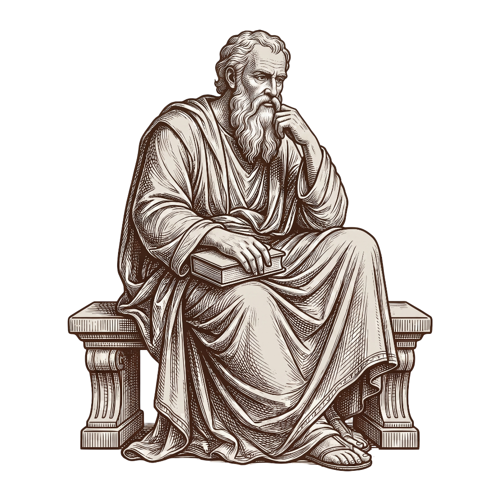
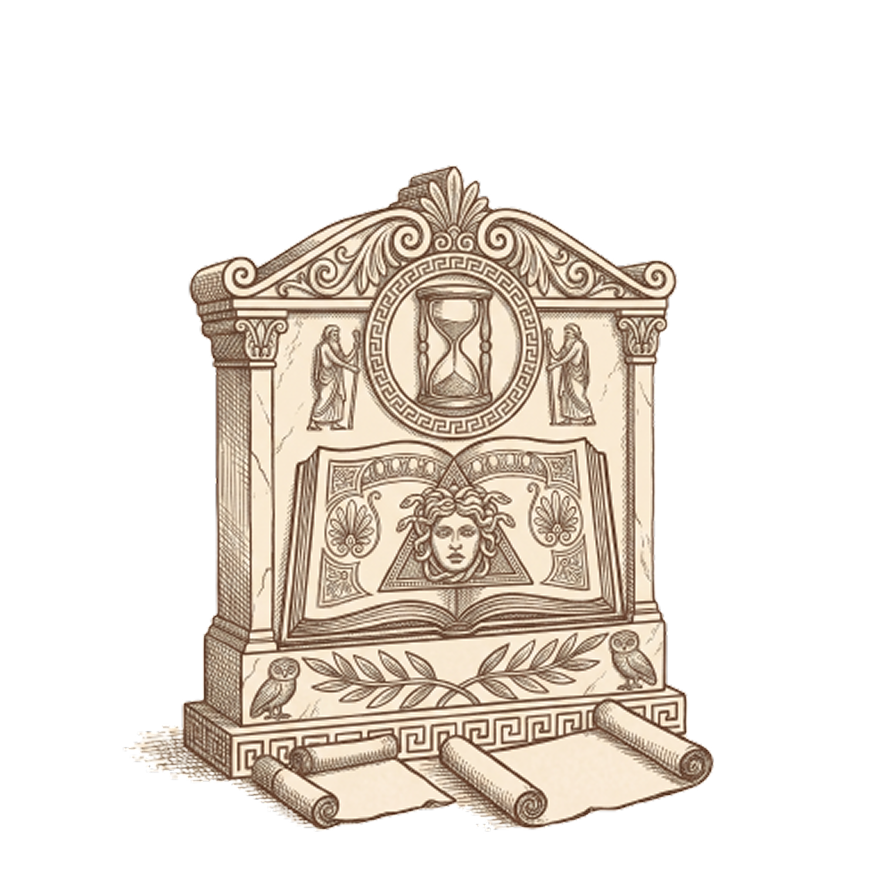
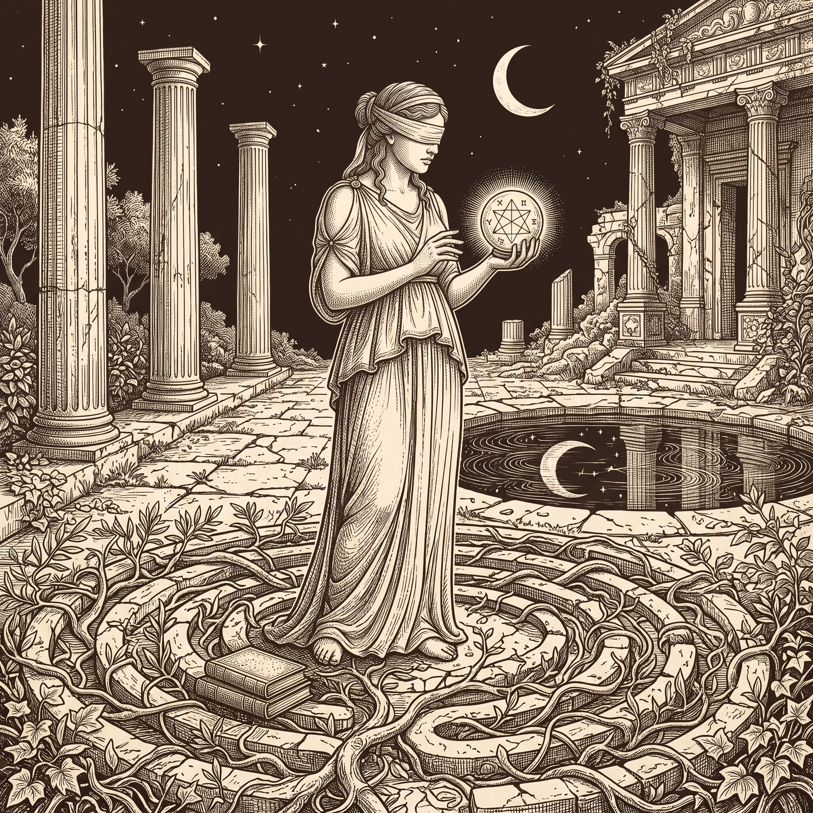
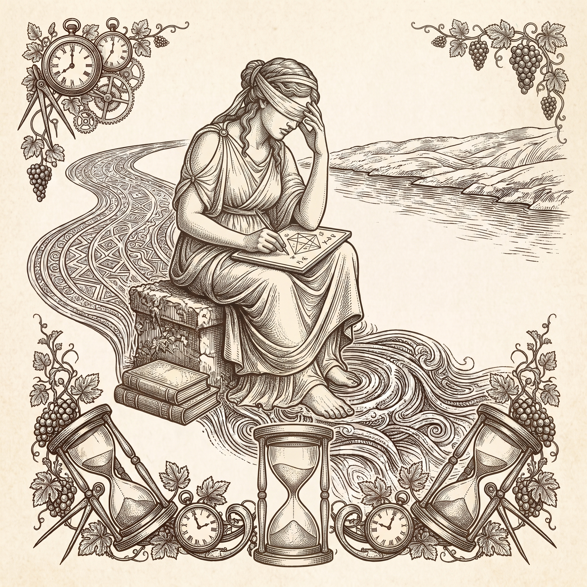

Apeiron
0%
Volume I - On Presence
A small journal of old thoughts, set down again for a scrolling age.

01
Engkau memiliki kuasa atas pikiranmu - bukan atas peristiwa di luar. Sadari ini, dan engkau akan menemukan kekuatan.
Marcus Aurelius - Meditations

Kebanyakan nasihat cepat usang. Baris-baris ini tidak. Kami cetak ulang di sini, apa adanya, sebab satu kalimat yang baik masih mengerjakan apa yang tak mampu dilakukan seribu kalimat baru.
02
Kita lebih sering menderita dalam bayangan daripada dalam kenyataan.
Seneca - Letters from a Stoic


03
Tak seorang pun pernah menginjak sungai yang sama dua kali.
Heraclitus - Fragmen
Bacalah perlahan. Itu satu-satunya metode.